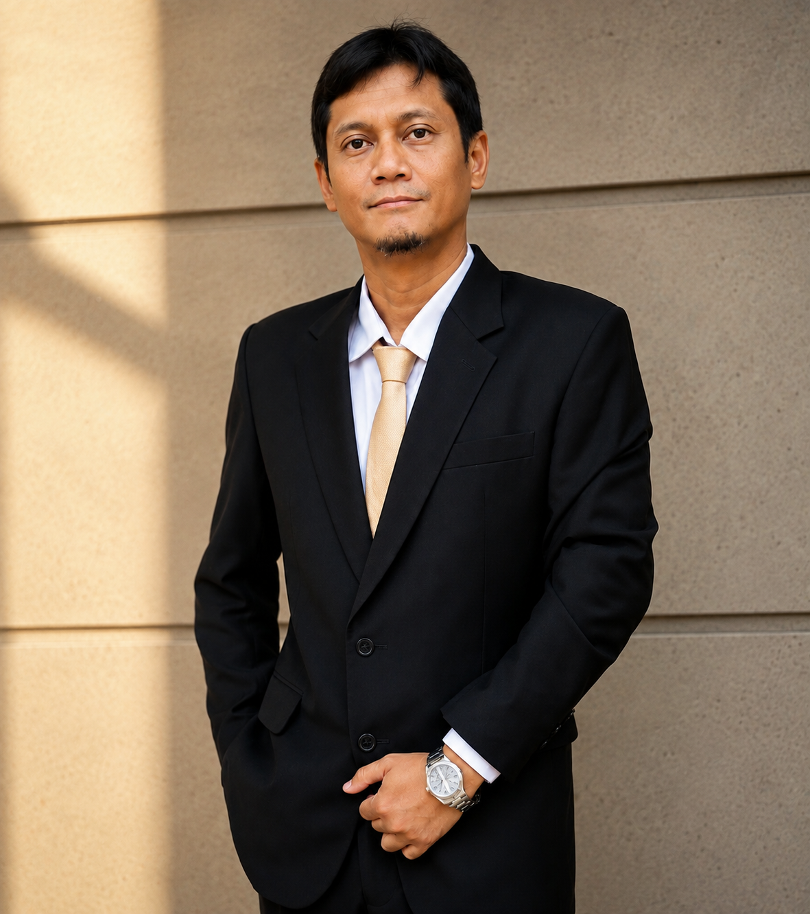

01 / Profil Perusahaan
Berdiri sejak 2020.
Mohammad Muchsin & Rekan merupakan kantor advokat dan konsultan hukum yang memberikan pendampingan bagi masyarakat dan pelaku usaha.
01 / Tentang Kami
Didirikan oleh Mohammad Muchsin.
Mohammad Muchsin & Rekan mulai beroperasi pada 2020. Kantor hukum ini didirikan oleh Mohammad Muchsin untuk memberikan pelayanan dan pendampingan hukum bagi masyarakat yang membutuhkan.
Dalam menangani setiap perkara, kantor kami mengutamakan sikap profesional, komunikasi yang jelas, dan upaya menjaga agar hak-hak klien terpenuhi sesuai ketentuan hukum yang berlaku.

02 / Pendiri
Mohammad
Muchsin.
Sebagai pendiri, Mohammad Muchsin membangun kantor dengan perhatian pada penyelesaian persoalan hukum yang dihadapi individu, keluarga, dan perusahaan.
Tahun dimulainya kegiatan kantor Mohammad Muchsin & Rekan.
03 / Bidang Penanganan
Perkara yang kami tangani.
Kantor kami banyak menangani persoalan hukum keluarga, pidana, perdata, dan perusahaan. Bentuk pendampingan disesuaikan dengan kebutuhan serta keadaan setiap perkara.
Hukum
Keluarga
Hukum
Pidana
Hukum
Perdata
Hukum
Perusahaan
Litigasi
Pendampingan dan penanganan perkara melalui proses hukum di pengadilan sesuai dengan kebutuhan klien.
Nonlitigasi
Konsultasi, pendampingan, dan langkah penyelesaian persoalan hukum di luar proses persidangan.